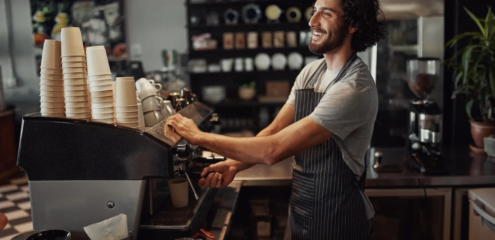

Bienvenido a Pausa y Café
El lugar donde cada momento se disfruta con una buena taza en mano. Estamos felices de que estés aquí. Relájate, respira y disfruta.
Descubre Nuestro Café Artesanal
En Pausa y Café seleccionamos granos 100% Arábica de origen único, tostados con mimo para realzar cada matiz de sabor y aroma. Cada taza es el resultado de un proceso cuidado, pensado para regalarte un instante de calma y placer.
Desde un espresso intenso y vibrante, hasta un latte suave y aterciopelado, nuestro menú ofrece la variedad perfecta para acompañar tu día. Acompaña tu bebida con nuestras delicias recién horneadas y vive la auténtica experiencia Pausa y Café.
Explorar MenúNuestra Filosofía
Creemos que cada taza de café cuenta una historia. Nos apasiona compartir momentos de calidad, apoyar a productores locales y fomentar la cultura del café responsable.
Lo que dicen nuestros clientes
"El mejor café de la ciudad, con un ambiente acogedor e inigualable."
— María López
"Siempre vengo aquí por la calidad y la atención personalizada."
— Juan Pérez
"El aroma del café recién molido es simplemente irresistible."
— Ana Torres